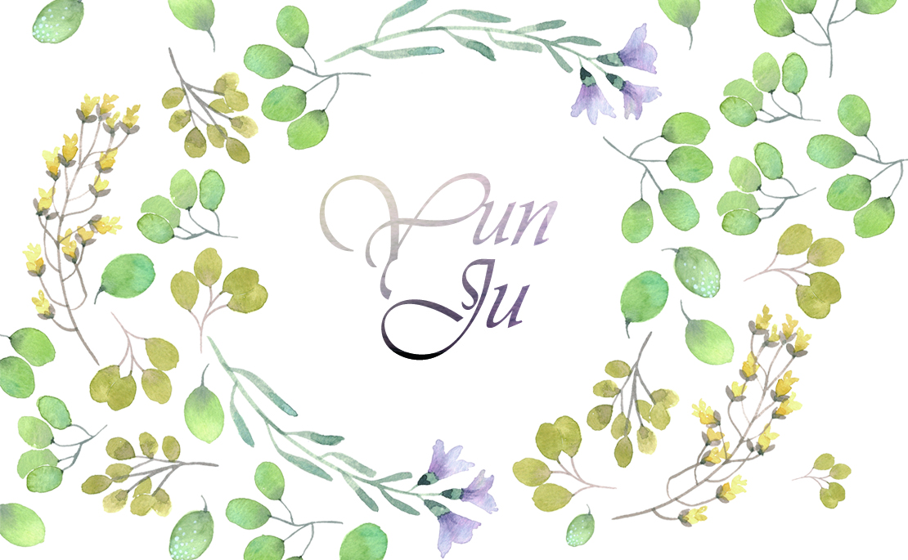

>>>Works in TNUA
Business Card Design: Yun-JuIntroduce:I designed this business card for myself.I utilized the watercolor style on flowers and words to present an elegant feeling. Tool:Photoshop |
Business Card Design: Nezo CafeIntroduce:I designed this business card for myself.I utilized the watercolor style on flowers and words to present an elegant feeling. Tool:Photoshop |
Poster DesignIntroduce:The poster is designed to promote handwashing.In the design of the title, I added bubbles and organized the words in a lively way. I divided the information into three parts and utilized illustrations to present the information in a clear way. There are two main colors in the design. Blue represents the image of water and cleanliness. Yellow is used as a visual emphasis. Tool:Indesign, Illustrator |